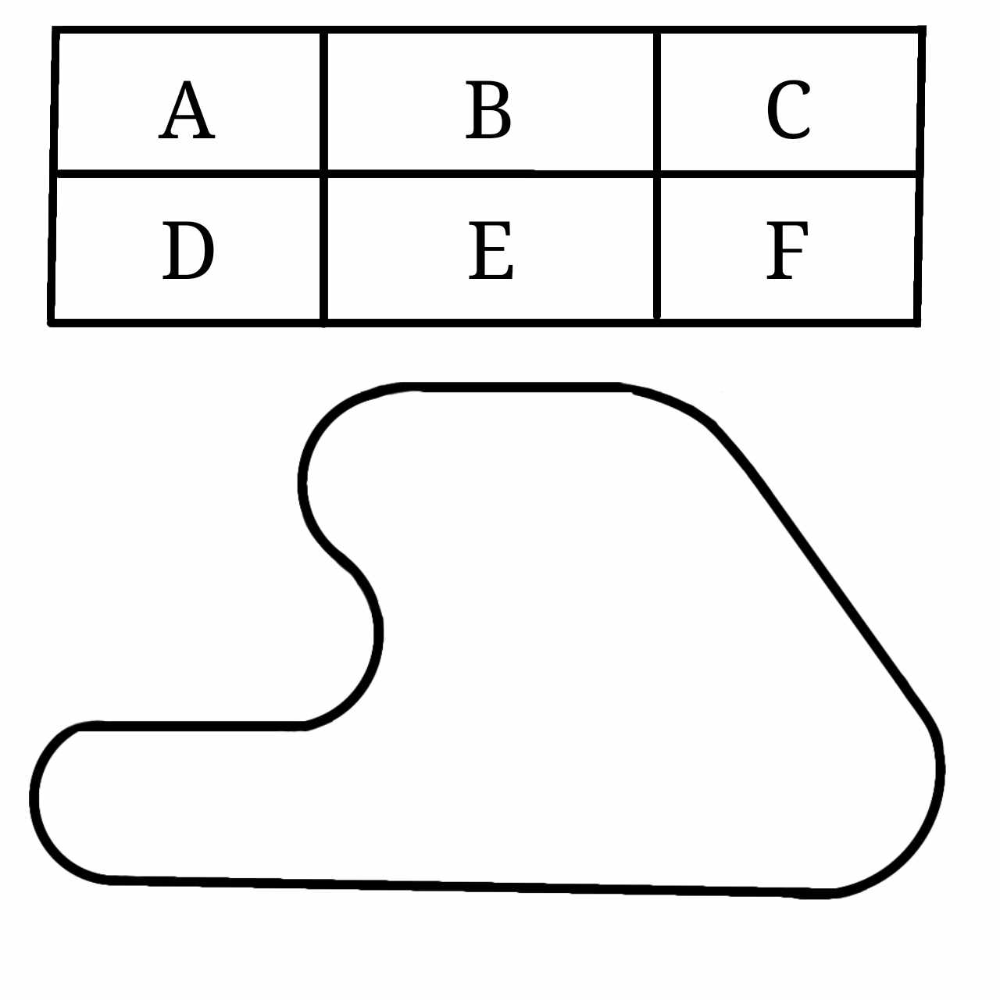

Szereti az autókat? Na és a versenyeket?
A legjobb helyen jár!
Nállunk a világ bármelyik részén nézheti a futamokat, a legjobb áron!
És ez még nem minden! Akár még Ön is vezethet!
Forma 1

Aktuális pálya:
Magyar
Az előző futam győztese: Valaki
Forma 1-es futamaink a legjobb pályákon zajlanak, a legjobb versenyzőkkel, különféle kocsikkal.
Vegye meg előre a jegyét a legjobb helyekre!
Élményvezetés
Úgy érzi elege van abból, hogy csak nézi ahogyan mások versenyeznek? Itt a lehetőség!
Élményvezetésen vehet részt pályáinkon egy órán keresztül, személyesen is megtapasztalhatja ezt a vissza nem térő éményt!
Hozza el családját is, hogy szurkoljanak önnek! Vegye meg jegyét most!